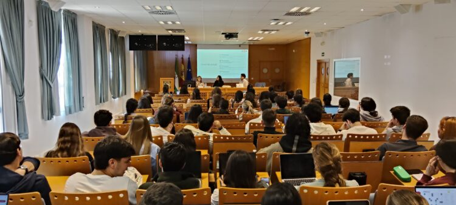
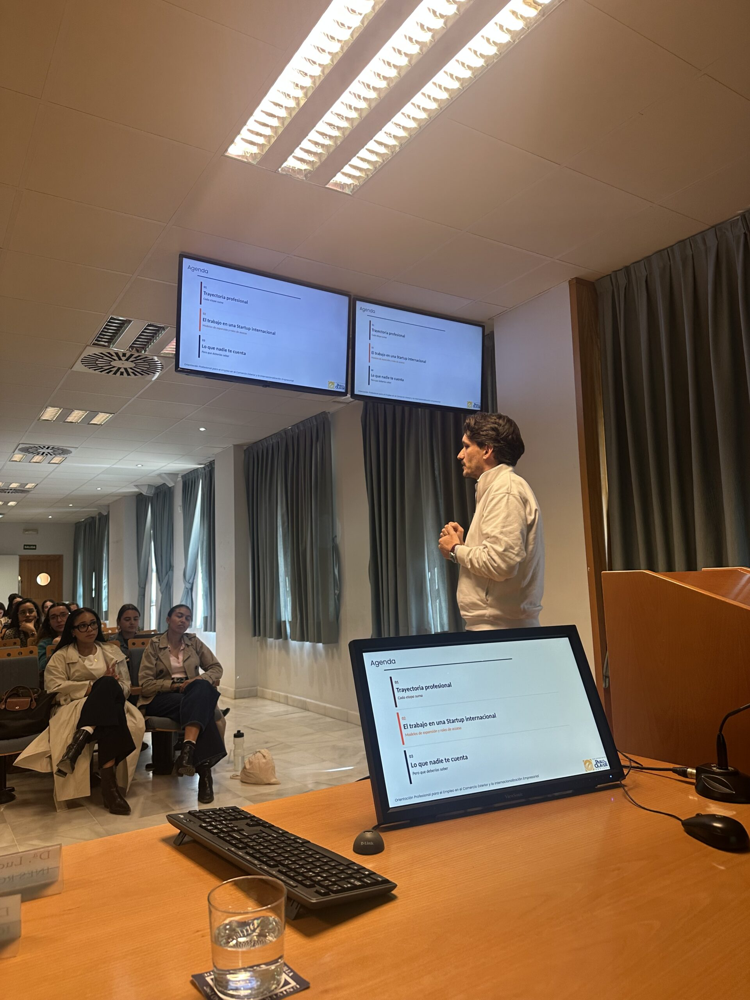

La UPO impulsa la empleabilidad internacional con una jornada sobre comercio exterior
Publicado el 19 de septiembre de 2026
Enmarcada en el programa Oriéntate y Encuentra 2026, acerca al alumnado oportunidades profesionales internacionales
La Universidad Pablo de Olavide ha celebrado esta mañana una jornada sobre ‘Orientación profesional para el empleo en el comercio exterior y la internacionalización empresarial’, una iniciativa enmarcada en el programa Oriéntate y Encuentra 2026. El encuentro, coordinado por las profesoras de la UPO Ana Medina y Marián Morón junto al profesor Juan Manuel Berbel, ha estado organizado en el marco del programa Campus de Internacionalización de la UPO, y ha contado con la colaboración del ICEX.

Durante la sesión, el alumnado ha podido conocer de primera mano las oportunidades que ofrecen las becas de internacionalización y el programa de prácticas ICEX VIVES. Rosa Arias, responsable de internacionalización de empresas en el ICEX, explicó las principales convocatorias del organismo, mientras que los egresados de la UPO Lucía Conejo-Mir, vicepresidenta de ventas en Norteamérica en Inés Rosales, y Rubén Tineo, Business Operations and Strategy Lead en Qamarero, compartieron su experiencia profesional en entornos internacionales. La jornada ha acercado al estudiantado a la realidad del comercio exterior y la internacionalización empresarial, proporcionando herramientas prácticas, testimonios inspiradores y orientación clave para desarrollar su carrera en un contexto global.
